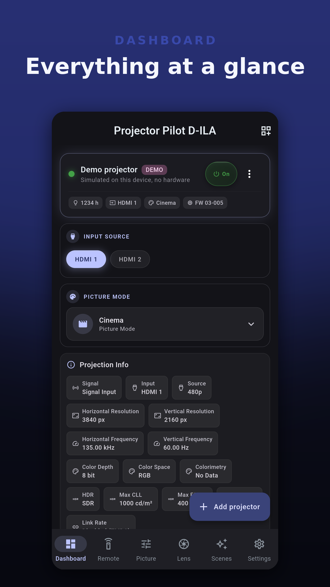

A local network remote for JVC D-ILA projectors, from your phone, tablet or computer.
Projector Pilot D-ILA talks to your projector directly, on its network control port (TCP 20554), with the network password you set on it. Power, inputs, menu navigation, picture mode, HDR level, color, motion, lens, installation and aspect, with scenes, maintenance and Home Automation on top. No account and no cloud service sit in between.

Taken on the demo projector, a marked simulation that lets you try every screen with no hardware. Tap any to zoom.
The keys follow JVC's published network command reference, and each model shows only the commands its own document lists. Which commands a projector accepts still depends on its model and firmware; it ignores one it does not support.
Power on and standby, HDMI 1 and HDMI 2, and menu navigation with up, down, left, right, OK, back and menu. Hide the picture, and jump straight to the projector's menus and info screen.
Picture mode, content type and HDR level, on the models that offer them.
Gamma, color temperature and color profile, plus the projector's motion settings.
Lens aperture and motorized lens control, installation modes, and the aspect and anamorphic modes for a scope screen.
Save input, picture, HDR and aspect as a scene, and recall the whole set with one tap.
Light source hours, life left against a rated life you enter, and opt-in reminders while connected. Show the projector's built-in test pattern on models that offer it.
While the app is open and connected, send a web request (POST, PUT or GET) to an address you enter when a projector turns on, goes to standby or changes input, or a scene is recalled. Mirror power and input to a Hubitat hub you link, and give Home Assistant a live projector sensor plus your scenes and controls as scripts.
Home-screen widgets for quick control, status, scenes, projector info and input. The demo projector lets you try every screen with no hardware, on a marked simulation that never sends a trigger.
The app knows every model that JVC's network command documents name, grouped below as its model database groups them. Names in one line are the same projector sold under different regional names.
How sure is each line? The DLA-NZ500 has been read and written over the network on a real projector. Every other model follows JVC's own published command documents for it. The app reads the model when it connects and shows only that model's commands. Using an Epson projector instead? Projector Pilot PJLink & VP21 controls Epson projectors and is available now.
Projector Pilot D-ILA connects straight to your projector on your local network. There is no MiyaraHub server and no account.
Scan your network, which tries port 20554 on every address of your subnet, or add a projector by its IP address.
Enter the network password you set on the projector. The app signs in on TCP 20554, reads the model, and keeps the password in your device's secure storage.
Use the remote, picture, lens and settings screens your model supports, save scenes, and link Home Automation if you want it.
The app talks to your projectors on your local network and to the store for in-app purchases. What else it sends, and when, is listed here.
Commands and status reads go directly between your device and your projector on your local network, with no cloud service in between.
No sign-up and no MiyaraHub account. Scan or enter the projector's address and connect.
Crash reports are on by default on Android, iPhone and iPad so bugs get fixed, and Settings turns them off. A crash report can include the text of the error that stopped the app, which in rare cases names a network address. The macOS and Windows apps send none. Anonymous usage analytics are off until you opt in, and carry counts and outcomes only, never a projector name, address, password or hub address.
Each projector's network password is kept in your device's secure storage. It goes nowhere else, not into logs or backups, except to the Home Assistant you add the projector to.
With the Home Automation purchase, the app sends your triggers only to the web addresses you enter, power and input only to the Hubitat hub you link, and projector status to the Home Assistant you sign in to. Without it, and always for the demo projector, nothing is sent.
Pro, Home Automation and the bundle are one-time purchases handled by the store. MiyaraHub never sees your payment details.
Everything you need to know about Projector Pilot D-ILA.
Projector Pilot D-ILA is an independent application developed and published by MiyaraHub Technologies LLC. Not affiliated with or endorsed by JVCKENWOOD Corporation. JVC and D-ILA are trademarks of their owners.
HDMI is a trademark of HDMI Licensing Administrator, Inc. All other product names and trademarks belong to their respective owners and are used here only to identify compatible hardware (nominative use).
The app requires a compatible projector on the same local network. Features vary by model, firmware and network and are not guaranteed. The app is provided as is, without warranty, and you use it at your own risk.
Projector Pilot D-ILA is in store review for iPhone, iPad, Android, macOS and Windows. The manual is ready to read now.